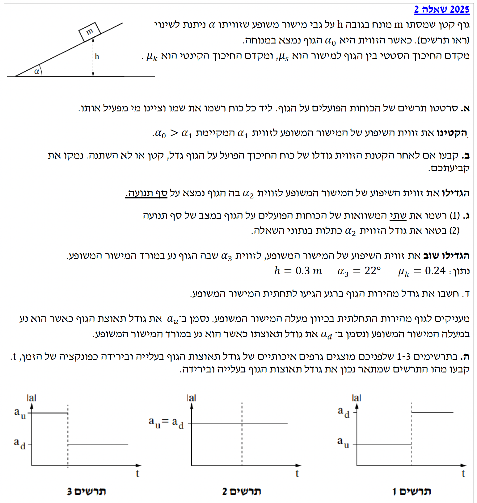

פתרון בגרות בפיזיקה
מכניקה 2025, שאלה 2
פתרון מודרך, צעד-אחר-צעד
עודכן:
--- --:--:--
מבט כללי על השאלה
שלום לכולם! ברוכים הבאים לפתרון המודרך. אנחנו נפתור את השאלה צעד אחר צעד, בצורה ברורה ומסודרת, תוך הקפדה על כל כללי הפיזיקה.
השאלה מתמקדת בניתוח כוחות של גוף על מישור משופע. אנו נשתמש בחוקי ניוטון (החוק הראשון עבור מצבי מנוחה, והחוק השני עבור מצבי תנועה), בקינמטיקה של תנועה שוות-תאוצה, ובניתוח גרפים להבנת השינויים בכוחות.
זכרו, המפתח להצלחה בשאלות אלו הוא שרטוט מדויק של תרשים הגוף החופשי (FBD) והקפדה על מערכת צירים ברורה.

[תמונת השאלה המקורית]
לא נמצאה תמונה בשם question-image.png באותה תיקייה.
מה נתון: גוף שמסתו \( m \) מונח במנוחה על מישור משופע שזוויתו \( \alpha_0 \).
מה מחפשים: לסרטט תרשים של הכוחות הפועלים על הגוף, ולציין ליד כל כוח את שמו ומי מפעיל אותו.
נוסחאות מהדף ועקרונות בשימוש:
\( \Sigma\vec{F} = 0 \) (מכיוון שהגוף נמצא במנוחה, אנו מסתמכים על החוק הראשון של ניוטון)
פתרון צעד-אחר-צעד:
על הגוף פועלים שלושה כוחות. נסרטט אותם בתרשים הגוף החופשי (FBD) הבא:
פירוט הכוחות:
- \( mg \) (כוח הכובד): פועל כלפי מטה אל מרכז כדור הארץ. מופעל על ידי: כדור הארץ.
- \( N \) (הכוח הנורמלי): כוח תגובה מהמשטח, פועל במאונך למישור המשופע כלפי חוץ. מופעל על ידי: המישור המשופע.
- \( f_s \) (כוח חיכוך סטטי): פועל במקביל למישור המשופע, במעלה המדרון, כדי למנוע מהגוף להחליק מטה. מופעל על ידי: המישור המשופע.
💡 טיפ מורה:
כדי לא להתבלבל בכיוון כוח החיכוך, זכרו תמיד לשאול את עצמכם: "לאן הגוף היה מחליק אם המשטח היה חלק לגמרי?". כיוון שכוח החיכוך מתנגד לתנועה (או לשאיפת התנועה), הוא יפעל תמיד בכיוון ההפוך! כאן הגוף שואף להחליק למטה, לכן החיכוך פועל למעלה.
מה נתון: מקטינים את זווית השיפוע לזווית חדשה \( \alpha_1 \) כך שמתקיים \( \alpha_1 < \alpha_0 \). הגוף עדיין נשאר במנוחה.
מה מחפשים: לקבוע ולנמק האם גודלו של כוח החיכוך פועל על הגוף גדל, קטן או לא השתנה לאחר הקטנת הזווית.
נוסחאות מהדף:
\( \Sigma\vec{F} = m\vec{a} \)
\( \Sigma F_x = 0 \) (כי אין תאוצה, \( a=0 \))
חישוב:
נבחר מערכת צירים שבה ציר ה-x מקביל למישור המשופע ומכוון במורד המדרון. נרשום את משוואת הכוחות בציר זה:
\[ \Sigma F_x = mg \sin\alpha - f_s = 0 \]
מכאן נבודד את כוח החיכוך הסטטי:
\[ f_s = mg \sin\alpha \]
אנו רואים שגודלו של כוח החיכוך הסטטי תלוי ישירות בסינוס הזווית. הפונקציה סינוס היא פונקציה עולה עבור זוויות חדות (בין 0 ל-90 מעלות). לכן, כאשר הזווית קטנה מ- \( \alpha_0 \) ל- \( \alpha_1 \), הערך של \( \sin\alpha \) קטן.
מסקנה: גודלו של כוח החיכוך הסטטי קטן.
💡 טיפ מורה:
מלכודת נפוצה היא להתבלבל בין כוח החיכוך הסטטי בפועל (\( f_s \)) לבין כוח החיכוך הסטטי המקסימלי (\( f_{s,max} \)). הנוסחה שמופיעה בדף הנוסחאות היא \( f_s \le \mu_s N \). כוח החיכוך "חכם" – הוא מפעיל בדיוק את הכוח הדרוש כדי לשמור על מנוחה, שזה בדיוק הרכיב של כוח הכובד במורד המישור!
מה נתון: מגדילים את הזווית ל- \( \alpha_2 \), ובה הגוף נמצא בדיוק על סף תנועה. מקדם החיכוך הסטטי הוא \( \mu_s \).
מה מחפשים: (1) לרשום שתי משוואות כוחות. (2) לבטא את הזווית \( \alpha_2 \) באמצעות נתוני השאלה.
נוסחאות מהדף:
\( \Sigma\vec{F} = 0 \)
\( f_s \le \mu_s N \) (הופכת למשוואה מדויקת: \( f_{s,max} = \mu_s N \) כיוון שהגוף על סף תנועה)
פתרון צעד-אחר-צעד:
שלב 1: משוואות כוחות
נגדיר ציר x במורד המישור וציר y בניצב למישור. הגוף עדיין במנוחה לכן סכום הכוחות בכל ציר הוא אפס.
ציר x:
\( mg \sin\alpha_2 - f_{s,max} = 0 \)
ציר y:
\( N - mg \cos\alpha_2 = 0 \)
נציב את הביטוי לחיכוך המקסימלי במשוואת ציר x ונקבל את שתי המשוואות הסופיות:
(1) \( mg \sin\alpha_2 - \mu_s N = 0 \)
(2) \( N - mg \cos\alpha_2 = 0 \)
שלב 2: ביטוי הזווית
נפתור את מערכת המשוואות כדי לבטא את \( \alpha_2 \). ממשוואת ציר y נבודד את הנורמל: \( N = mg \cos\alpha_2 \).
נציב ביטוי זה לתוך משוואת ציר x:
\[ mg \sin\alpha_2 - \mu_s (mg \cos\alpha_2) = 0 \]
\[ mg \sin\alpha_2 = \mu_s mg \cos\alpha_2 \]
המסה \( m \) ותאוצת הכובד \( g \) מצטמצמות (שונות מאפס). נחלק את שני האגפים ב- \( \cos\alpha_2 \) (שגם הוא שונה מאפס כי הזווית חדה):
\[ \frac{\sin\alpha_2}{\cos\alpha_2} = \mu_s \implies \tan\alpha_2 = \mu_s \]
\[ \alpha_2 = \arctan(\mu_s) \]
💡 טיפ מורה:
מצב של "על סף תנועה" הוא המצב היחיד שבו מותר לנו להחליף את סימן אי-השוויון בנוסחת החיכוך הסטטי בסימן שוויון! בנוסף, שימו לב שהזווית שבה גוף מתחיל להחליק אינה תלויה במסה של הגוף! מסה של קילוגרם ומסה של משאית יתחילו להחליק בדיוק באותה זווית אם משטחי המגע זהים.
מה נתון: הזווית הוגדלה ל- \( \alpha_3 = 22^\circ \). הגוף נע במורד המישור. הגובה ההתחלתי \( h = 0.3 \text{ m} \). מקדם החיכוך הקינטי \( \mu_k = 0.24 \). הגוף שוחרר ממנוחה (\( v_0 = 0 \text{ m/s} \)).
מה מחפשים: את גודל מהירות הגוף בדיוק ברגע הגעתו לתחתית המישור (\( v \)).
נוסחאות מהדף:
\( v^2 = v_0^2 + 2a(x - x_0) \)
\( \Sigma\vec{F} = m\vec{a} \)
\( f_k = \mu_k N \)
\( \sin\alpha = \frac{\text{Opposite}}{\text{Hypotenuse}} \)
חישוב צעד-אחר-צעד:
שלב 1: מציאת המרחק שהגוף עובר (\( \Delta x = x - x_0 \))
הגוף מתחיל מגובה \( h \) ויורד לאורך היתר של המשולש ישר הזווית. נחשב את היתר:
\[ \sin(22^\circ) = \frac{h}{\Delta x} \implies \Delta x = \frac{h}{\sin(22^\circ)} = \frac{0.3}{\sin(22^\circ)} \approx \frac{0.3}{0.3746} \approx 0.8008 \text{ m} \]
שלב 2: מציאת תאוצת הגוף (\( a \))
נבחר ציר x חיובי בכיוון התנועה (במורד המישור). נרשום את משוואות הדינמיקה:
ציר y:
\( \Sigma F_y = m \cdot 0 \implies N - mg \cos(22^\circ) = 0 \implies N = mg \cos(22^\circ) \)
ציר x:
\( \Sigma F_x = ma \implies mg \sin(22^\circ) - f_k = ma \)
נציב את כוח החיכוך הקינטי \( f_k = \mu_k N = \mu_k mg \cos(22^\circ) \) במשוואת ציר x:
\[ mg \sin(22^\circ) - \mu_k mg \cos(22^\circ) = ma \]
שוב, המסה \( m \) מצטמצמת. נציב את הנתונים (אנו לוקחים \( g = 10 \text{ m/s}^2 \) כפי שמקובל):
\[ a = g(\sin(22^\circ) - \mu_k \cos(22^\circ)) \]
\[ a = 10 \cdot (\sin(22^\circ) - 0.24 \cdot \cos(22^\circ)) \]
\[ a = 10 \cdot (0.3746 - 0.2225) = 10 \cdot 0.1521 = 1.521 \text{ m/s}^2 \]
שלב 3: חישוב המהירות הסופית
נציב את הנתונים בנוסחת הקינמטיקה. ידוע כי \( v_0 = 0 \).
\[ v^2 = 0^2 + 2 \cdot 1.521 \cdot 0.8008 \]
\[ v^2 = 2.436 \implies v = \sqrt{2.436} \approx 1.56 \text{ m/s} \]
מסקנה: גודל מהירות הגוף בתחתית המישור הוא \( 1.56 \text{ m/s} \)
💡 טיפ מורה:
הערה חשובה: הגדרנו את ציר ה-x כחיובי במורד המישור. בגלל בחירה זו, הרכיב של תאוצת הכובד המניע את הגוף מיוצג באופן חיובי. אל תשכחו שאפשר לפתור את השאלה הזו גם בדרך של עבודה ואנרגיה: העבודה של כוח החיכוך (שהוא כוח לא משמר) שווה לשינוי באנרגיה המכנית \( W_{nc} = \Delta E \). התוצאה תהיה זהה!
מה נתון: מעניקים לגוף מהירות התחלתית במעלה המישור. תאוצתו בעלייה היא \( a_u \) (u = up). לאחר מכן הוא יורד חזרה למטה ותאוצתו בירידה היא \( a_d \) (d = down). נתונים שלושה גרפים.
מה מחפשים: לקבוע איזה מהגרפים מתאר נכונה את גודל התאוצה (בערך מוחלט \( |a| \)) בעלייה ובירידה.
נוסחאות מהדף:
\( \Sigma\vec{F} = m\vec{a} \)
פתרון צעד-אחר-צעד:
בואו ננתח את הכוחות הפועלים לאורך ציר התנועה בכל אחד מהמצבים. נגדיר לשם הנוחות את הכיוון "למטה לאורך המישור" כחיובי בשני המקרים כדי למצוא את ביטוי התאוצה.
שלב 1: מצב עלייה (הגוף נע למעלה)
הגוף נע במעלה המישור. לכן, כוח החיכוך הקינטי מתנגד לתנועה ופועל כלפי מטה (באותו כיוון של רכיב כוח הכובד!).
\[ \Sigma F_x = mg \sin\alpha + f_k = m a_{u,\text{vector}} \]
\[ mg \sin\alpha + \mu_k mg \cos\alpha = m a_{u,\text{vector}} \]
אנו רואים שהכוחות "משלבים כוחות". גודל המהירות קטן בקצב מהיר. גודל התאוצה הוא (לאחר צמצום המסה):
\[ |a_u| = g(\sin\alpha + \mu_k \cos\alpha) \]
שלב 2: מצב ירידה (הגוף נע למטה)
הגוף נע במורד המישור. לכן, כוח החיכוך הקינטי מתנגד לתנועה ופועל כלפי מעלה (הפוך לרכיב כוח הכובד).
\[ \Sigma F_x = mg \sin\alpha - f_k = m a_{d,\text{vector}} \]
\[ mg \sin\alpha - \mu_k mg \cos\alpha = m a_{d,\text{vector}} \]
כאן הכוחות פועלים בכיוונים מנוגדים. גודל התאוצה הוא:
\[ |a_d| = g(\sin\alpha - \mu_k \cos\alpha) \]
שלב 3: מסקנה מתוך הגרפים
אם נשווה את שני הגדלים שמצאנו, ברור לחלוטין כי הביטוי שבו מחברים את החיכוך גדול יותר מהביטוי שבו מחסרים אותו. לכן מתקיים: \( |a_u| > |a_d| \). גודל התאוצה בזמן העלייה גדול יותר מגודל התאוצה בזמן הירידה.
- תרשים 1: מציג \( |a_d| > |a_u| \) (שגוי).
- תרשים 2: מציג \( |a_u| = |a_d| \) (שגוי, קורה רק במשטח חלק ללא חיכוך).
- תרשים 3: מציג \( |a_u| > |a_d| \) (נכון!).
הגרף הנכון הוא תרשים 3.
💡 טיפ מורה:
חישבו על זה בצורה אינטואיטיבית: כשאתם עולים בעלייה תלולה, גם כוח הכובד וגם החיכוך מנסים לעצור אתכם ביחד! לכן, המהירות שלכם תאבד מהר מאוד (תאוצה גדולה). אבל כשאתם יורדים באותה ירידה, כוח הכובד מושך למטה והחיכוך מנסה לעזור לכם לבלום. הם מקזזים זה את זה, ולכן המהירות משתנה בקצב איטי יותר (תאוצה קטנה יותר). אל תשתמשו במילה "תאוטה" – פשוט הבינו שגודל התאוצה משקף את קצב שינוי המהירות!